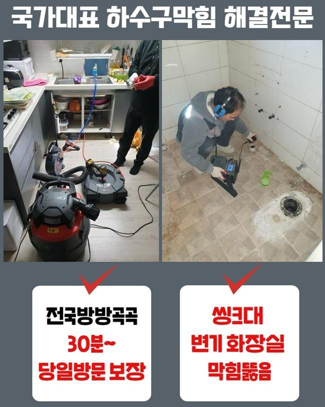
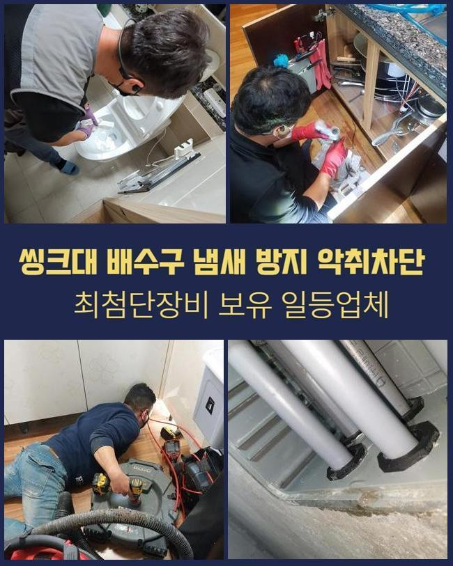
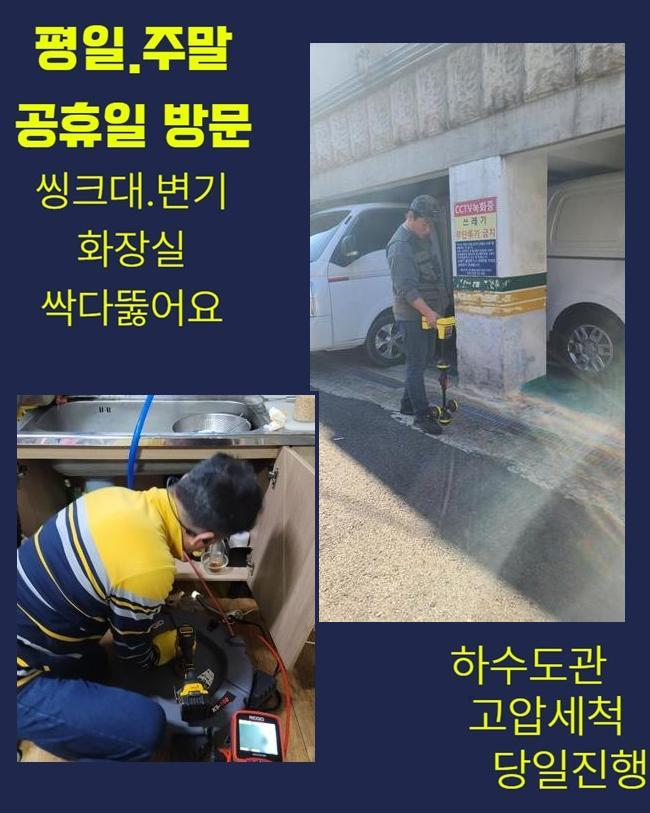
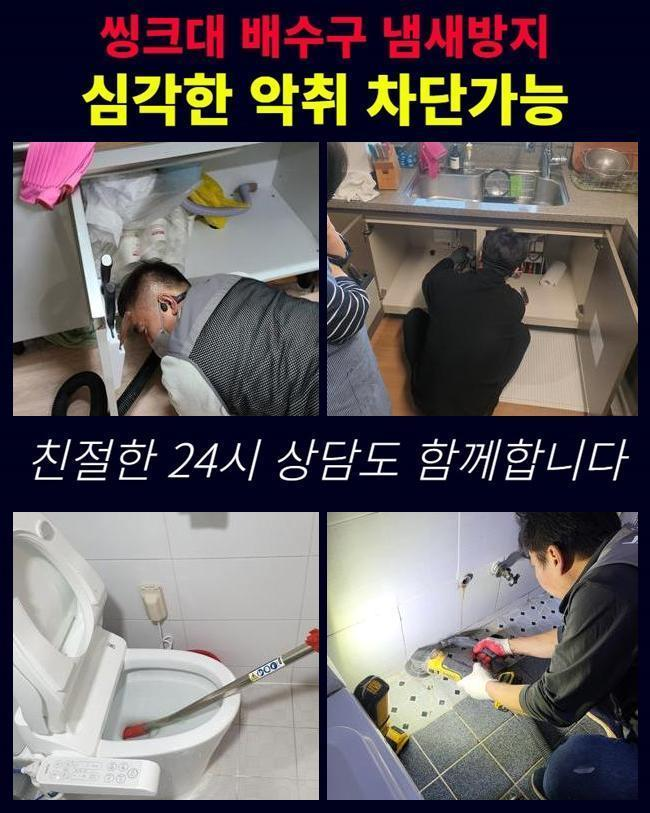
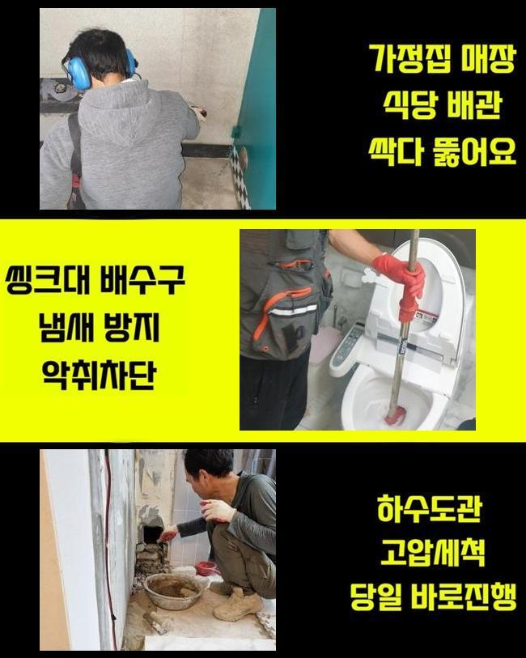
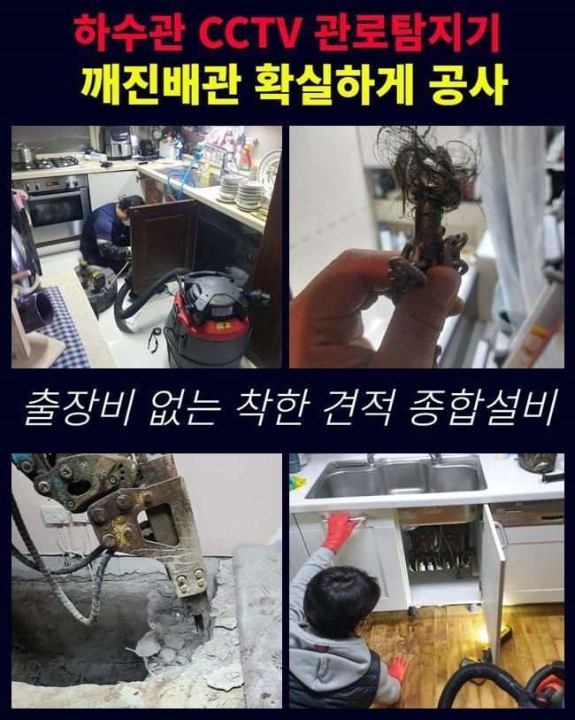
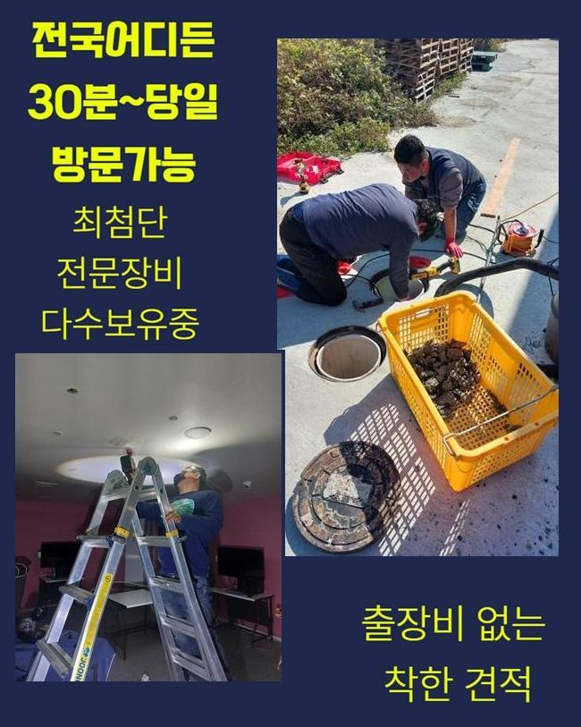

🏠 성남 금광동욕실뚫음 중앙동 냄새차단 누수공사
성남 중앙동 싱크대막힘 전문 시공 후기

📋 작업 개요
- 위치: 성남 중앙동, 중앙동, 성남
- 서비스 유형: 싱크대막힘, 하수구막힘, 배관막힘, 누수수리, 역류해결, 뚫는업체, 고압세척, 설비공사, 배관보수, 악취차단
- 작업 일시: 2025. 5. 24. 22:05
- 업체명: 하수구수사대 (010-5615-2118)
🔍 문제 상황
성남 금광동욕실뚫음 중앙동 냄새차단 누수공사
부엌 배수구가 막힌 문제가 극복되게 해드리려고 시간에 맞춰서 방문을 해보았습니다
원래 사람들은 쾌적하게 생활하고자 공기를 맑게 해주는 장치라거나 탈취제를 분사해서 냄새없는 상태로 유지하게 되는데요
여유를 즐기는 쉼터가 돼야 할 주거공간에서 냄새가 풍긴다면 불쾌한 마음을 갖게 됩니다
집에서 풍기는 냄새는 썩은 음식물이나 하수구에서 유발됐을 확률이 높은데요
예전에는 괜찮았던 싱크대에 물고임이 생기면서 악취도 어마어마하다며 고객님께서 빠른 해결을 필요로 하고 계셨습니다
역대급으로 심해진 하수구의 끔찍한 냄새는 강력한 클리너 및 여러 수단을 써봤지만 진전이 없었다고 허무하다고 하셨습니다
물은 계속 고이고 원천차단돼서 습기가 자욱해지자 저희를 찾아주셨습니다
가장 빠른 시간대에 고장난 싱크대 관로를 심도 깊게 보기위해 신속히 이동하였습니다
상황에 따라서 세척이 필요할 수도 있으며 막힘이 중증이라면 보다 커다란 공사가 추진될 수 있다는 점을 먼저 말씀드렸어요
현장에 가까이 다가가보니 주방 배수로의 내측에서 솟구친 오물때문에 참기가 힘든 냄새가 훅 끼쳤습니다
여기저기로 삽시간에 퍼지는 악취가 심각해서 안정된 생활이 방해받고 있었기에 막힌곳을 낱낱이 조사해서 보수를 해드려야겠다고 목표를 잡았습니다

🔎 원인 분석
💡 전문가 진단: 정밀 진단 장비를 사용하여 슬러지의 고착 여부를 판명하고 타격/세척 작업을 실시했습니다.
특수하지 않다면 그저 하수구막힘으로 보이는 징후이니 웬만하면 오늘까지 수정이 가능할거라고 말씀을 올리고 시공에 착수했어요
싱크대 밑 수납공간인 하부장에 접근하여 주름배관을 상세히 검사해 보았습니다
구조적으로 구부러진 상태였고 오염원이 누적되기 쉬운 형상으로 보였어요
배수관을 볼 수 있는 특정 부분을 해체해서 카메라를 진입시킬 준비를 해줬는데요
주름관을 떼내고 배수롤로를 보면서 얼마나 많은 양의 이물질이 축적되어 있는지 조사를 이어갔습니다
배관의 구석구석에 까만 색으로 변질된 물체가 엉겨 붙은 모습으로 자리하고 있었습니다
하수구에 연결된 부품은 보통 소비재이기 때문에 장기간 설치되어 있을수록 점차 약해지기 때문에 수시로 갈아주는 것이 좋다고 할 수 있어요
이번 케이스 역시 주름배관이 오염되어 새걸로 달아드려야했고 바꿔야 할 이유를 이해하시기 쉽도록 말을 해드리고 본단계에 들어갑니다
주름관의 사이사이에도 이물질이 뺴곡한 걸로 볼 수 있었고 마찬가지로 배수관의 내부 상태도 악화됐다는 것이 예상이 됐어요
내부 탐방을 하려면 입구 근방에 존재하는 덕지덕지 붙은 이물질을 삭제해야 했는데요
석션의 흡입기능으로 남은 물을 흡입해야 그 다음 차례인 샤프트로 통수를 낼 수 있으니 흡입해서 정화하는 일을 반복하며 깔끔하게 만들었습니다
내시경이 투입될 수 있는 충분한 공간을 조성하게 되는 꼭 거쳐가야할 과정입니다

🔧 작업 과정
집적된 이물질이 배출되니까 이제는 내시경을 통한 검사를 시행할 수 있었어요
배관 속사정을 파악하려면 내부를 맑게 해야 하는데 이를 지원해주는 게 다름아닌 석션입니다
싱크대 상의 오류를 극복하기 위해서는 내부 내시경기를 넣어서 내벽에 붙은 이물질의 크기와 장소를 알아내는 게 매우 중요한 부분입니다
어떤 위치에 있는지 명확히 알아낸다면 구멍을 계속 내는 등의 복원단계를 줄여서 시공비용과 같은 부분에서 효과가 좋습니다
내시경 카메라를 배치하여 체크해보니 기름때와 지저분한 물질이 배관 벽에 말라붙어서 화면이 쉽게 감지되지 않았어요
슬러지는 하수구에 끼는 이물질의 형태라 할 수 있고 한몸이 됐다 싶을 정도로 관로에 붙은 채로 다른 이물질을 족족 그 자리에 멈추게 해요
끈끈한 성질이라서 일단 자리를 잡게 되면 밀착하게 되며 크기도 확대됩니다
석션 성능만 활용해서는 다소 어렵기 때문에 좀 더 강도높은 샤프트와 같은 장치를 병행하여 처리합니다
다량의 배관 슬러지를 남김 없이 제거하려 내시경 화면으로 거듭 주시하면서 회전하는 샤프트를 돌려서 맑은 물길이 트일 때 까지 배관을 닦아나갔습니다
샤프트의 도움으로 기름기의 많은 부분을 소멸시키긴 했지만 한 번만 돌려서는 완료까지 선언하는 것은 불가능한 게 사실입니다
반복시공으로 파이프가 새것처럼 변신할 때까지 작업 완성도를 보며 참을성을 가지고 플렉스 샤프트를 씁니다
싱크대 관로 곳곳에 붙어있는 슬러지들을 없애려는 목적으로 간간이 석션 작업을 넣어주었습니다
재발을 막기 위해서 내시경을 통해서 남은 문제는 없는지 진단했고 부유물이 없게끔 빈틈없는 정리를 수행해 나갔습니다
시공 과정 중 배관을 지나친 수준으로 자극을 준다면 최악의 사태가 될 수 있으니 기기를 다룰 때에 절차를 수행해요
식별되는 이물질은 파쇄하여 없앤 뒤 내시경을 재배치해서 배관이 복구됐는지 점검에 들어갑니다
신중한 업무 덕에 균열이나 파손된 부분이 없어 수습하기 위한 절차는 요구되지 않았어요
싱크대 밑의 주름관은 상태가 좋지 않았고 사실상 앞으로의 사용이 난감할 듯 보여서 새 호스로 교체를 끝내게 됐습니다
기존의 자리를 대체시킨 후 고정이 잘 되었는지 살핀 후에 힘 주어 체결 작업을 수행해요
수돗물을 단번에 흐르게 하여 통수 검사를 진행했고 끊김이 있거나 지체되지 않는 지를 확인했어요


✅ 작업 완료
이어서 물이 정상적으로 이동하다가 위로 튀어나오지 않는지 반복적으로 조사하고 마무리 하게 됩니다
막힌 구역을 단기간 내에 보완하는데에 실패하면 커다란 손상과 피해가 유발될 수 있으므로 막힘의 조짐이 인식될 때 수선을 요청하는 것이 옳습니다
체를 받쳐서 이물질을 따로따로 갈라서 안전하게 처리까지 해드리며 고객님께 향후 이용법을 알려드렸어요
배수구 안에서 나오는 역류와 불쾌한 냄새는 거주자라면 다들 거쳐갈 수 있는 흔한 문제인데요
급작스럽게 배관 상황때문에 어려움을 버텨내고 계신다면 빠르게 고쳐드리는 저희 업체에 연락을 걸어주세요




⚠️ 베란다 누수 및 방수 관리 방법
- ✅ 비가 많이 올 때 창틀 주변이나 아래층 천장에 얼룩이 생기는지 정기적으로 확인해 보세요.
- ✅ 우수관 주변 실리콘 마감이 들뜨거나 깨진 틈새가 있는지 손상 여부를 수시로 체크하세요.
- ✅ 베란다 바닥 타일의 줄눈(메지)이 소실되면 그 틈으로 물이 침투하여 누수가 유발됩니다.
- ✅ 누수 의심 증상 발견 시 방치하면 아래층 손실이 커지므로 즉시 전문가의 진단을 받으십시오.
💡 핵심 정리
- 확실한 장비 작업(내시경 점검 및 샤프트 스케일링)으로 원인을 뿌리 뽑습니다.
- 작업 후 1년 이내에 동일한 부위 재발 시 100% 무상 A/S 서비스를 보장합니다.
- 서울 · 경기 · 인천 전 지역에 24시간 언제든 긴급 출동할 수 있도록 항시 대기 중입니다.
❓ 자주 묻는 질문 (FAQ)
🚨 성남 중앙동 싱크대막힘 문제로 고민이신가요?
정확한 원인 진단과 확실한 시공으로 재발 없는 해결을 약속드립니다.
24시간 긴급 출동 | 서울 · 경기 · 인천 전지역 | 1년 내 재발 시 무상 A/S